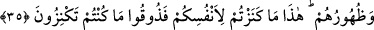

“İşte onlara acıklı bir azabı müjdele!” Bu cümlede, onlar için olan azap tehdidi
(vaîd), onların dışındakiler için nimetle müjdeleme yerine konulmuştur.
35. Bunlar o gün cehennem ateşinde kızdırılır ve onların alınları, yanları ve
sırtları dağlanır: “İşte kendiniz için yığdıklarınız, yığmanızın vebalini tadın!”
(denilir).
“Bunlar o gün, cehennem ateşinde kızdırılır” yani bu dinarlar ve dirhemler üzerine
harareti çok şiddetli olan ateş yakılır “ve bunlarla” o yakıcı altın ve gümüşlerle
“onların alınları, yanları ve sırtları dağlanır.”
Diğer âzâlarının değil de alınlarının, yanlarının ve sırtlarının dağlanmasının sebebi
şudur:
1. Çünkü zengin kişi kendisinden zekat isteyen fakiri görünce suratını asar, zekat
istemede ısrar ederse ona yanını döner, daha da ısrar ederse çoğunlukla yerinden kalkar,
sırtını döner ve fakire hiçbir şey vermez.
2. Yahut da (altın ve gümüşü) yığan kimsenin mal biriktirmekten maksadı, zenginliği
ile üstünlük peşinde koşmak olunca dağlama işi yüzünün en yüksek yeri olan alnına
uygulanır. Aynı şekilde kişi mal biriktirirken yanlarının şişmesine (kibirlenmesine)
sebep olan leziz yiyeceklerle ve sırtına giydiği güzel giysilerle refah içerisinde olmayı
amaçladığından yanları ve sırtları dağlanır.
O gündeki dağlama sırasında onlara: “İşte kendiniz” kendi menfaatiniz “için
yığdıklarınız,” dünyada bir araya getirdikleriniz.” Şimdi bunlar kendilerinin zararına
ve azap görmesine sebep olur, “yığmanızın vebalini tadın!” denilir.
Onların tadacakları, “yığdıkları” değil ancak yığmanın vebâli ve azâbıdır. Onlar bu
azabı ahirette tadacaklardır. Çünkü onlar dünyada âhiretten gaflet uykusundadırlar.
Uyuyan kimse dağlamanın elemini uykusundan uyandığı zaman tadar. “İnsanlar
uykudadır, öldükleri zaman uyanırlar.”[131]
İnsanlar ukbâdan gafildir
Sanki herkes uyuyanlara benzer
İşledikleri gafletin zararını
Öldükleri zaman bilirler
İmâm Zahîruddin’in el-Emâlî’sinde şu aktarılır: Eğer başkaları hazinelerini malla
doldurursa, sen amelle doldur. Başkaları fânî arazlar hazinesinin peşinde koşarlarsa,
sen bâkî olan esrâr rumuzlarını ara.